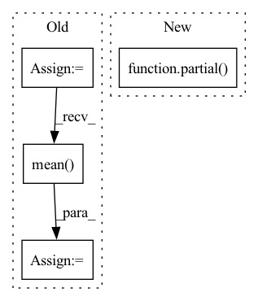

Pattern ID :11906
Before Change
registrator = ImageRegistrator("similarity").to(ref_batch.device)
homography = registrator.register(ref_batch.detach(), img_batch.detach()).to(ref_batch.device)
breakpoint()
warped_imgs = homography_warp(img_batch, homography, ref_batch.shape[-2:])
// Compute new PSNR:
mse_per_example = ((warped_imgs.detach() - ref_batch)**2).view(B, -1).mean(dim=1)
registered_psnrs = 10 * torch.log10(factor**2 / mse_per_example)
// Return best of default and warped PSNR:
return torch.stack([default_psnrs, registered_psnrs]).max(dim=0)[0].mean()After Change
default_psnrs += [10 * torch.log10(factor**2 / mse)]
// Align by homography:
registrator = ImageRegistrator("similarity", num_iterations=2500)
registrator.warper = partial( HomographyWarper, padding_mode="reflection")
registrator.to(ref.device)
homography = registrator.register(img, ref)
warped_img = registrator.warp_src_into_dst(img)
// Compute new PSNR:In pattern: SUPERPATTERN
Frequency: 3
Non-data size: 4
Instances Fragment ID: 40054179
Project Name: jonasgeiping/breaching
Commit Name: 6b4ffc1d9faebf9b2f809f69b0ed4a9af670db47
Time: 2021-11-29
Author: jonas.geiping@googlemail.com
File Name: breaching/analysis/metrics.py
M Class Name: AnonimousClass
N Class Name: AnonimousClass
M Method Name: _registered_psnr_compute_kornia(3)
N Method Name: _registered_psnr_compute_kornia(3)
M Parent Class:
N Parent Class:
M File Name: breaching/analysis/metrics.py
N File Name: breaching/analysis/metrics.py
M Start Line: 80
M End Line: 94
N Start Line: 81
N End Line: 99
Before Change
q_r = torch.cat((cumavg(q, dim=1), q), dim=-1)
k_r = torch.cat((cumavg(k, dim=1), k), dim=-1)
b_q = bucket(buckets, q_r)
b_k = bucket(buckets, k_r)
b_qi = b_q.mean(dim=2)
b_ki = b_k[:, :, 0]
sq = b_qi @ Wsq
sk = b_ki @ WskAfter Change
bh, *_, h, buckets, dim, dim_sort = *q.shape, self.heads, self.buckets, self.dim, self.dim_sort
b = bh // h
Wsq, Wsk, pos_q, pos_k = map(partial( expand_batch_and_merge_head, b) , (self.linear_sort_q, self.linear_sort_k, self.q_pos_emb, self.k_pos_emb))
k_r = torch.cat((cumavg(k, dim=1), k), dim=-1)
k_r = bucket(buckets, k_r) Fragment ID: 40054188
Project Name: lucidrains/sinkhorn-transformer
Commit Name: a3d36f7cdf5b9a134787caf42ce18b5b28b0ddc5
Time: 2020-04-10
Author: lucidrains@gmail.com
File Name: sinkhorn_transformer/sinkhorn_transformer.py
M Class Name: CausalAttentionSortNet
N Class Name: CausalAttentionSortNet
M Method Name: forward(3)
N Method Name: forward(3)
M Parent Class: nn.Module
N Parent Class: nn.Module
M File Name: sinkhorn_transformer/sinkhorn_transformer.py
N File Name: sinkhorn_transformer/sinkhorn_transformer.py
M Start Line: 354
M End Line: 371
N Start Line: 365
N End Line: 380
Before Change
else:
ic = pred_label.groupby(level="datetime").apply(lambda x: x["label"].corr(x["score"]))
_index = ic.index.get_level_values(0).astype("str").str.replace("-", "").str.slice(0, 6)
_monthly_ic = ic.groupby(_index).mean()
_monthly_ic.index = pd.MultiIndex.from_arrays(
[_monthly_ic.index.str.slice(0, 4), _monthly_ic.index.str.slice(4, 6)],
names=["year", "month"],
)After Change
ic_df = pd.concat(
[
pred_label.groupby(level="datetime").apply(partial( _corr_series, method=_methods_mapping[m]) ).rename(m)
for m in methods
],
axis=1, Fragment ID: 40054172
Project Name: microsoft/qlib
Commit Name: 2f5ce3dc01e6209520bd0d9bda52ed6d0188398e
Time: 2022-12-30
Author: qianyun210603@hotmail.com
File Name: qlib/contrib/report/analysis_model/analysis_model_performance.py
M Class Name: AnonimousClass
N Class Name: AnonimousClass
M Method Name: _pred_ic(2)
N Method Name: _pred_ic(2)
M Parent Class:
N Parent Class:
M File Name: qlib/contrib/report/analysis_model/analysis_model_performance.py
N File Name: qlib/contrib/report/analysis_model/analysis_model_performance.py
M Start Line: 113
M End Line: 161
N Start Line: 120
N End Line: 187